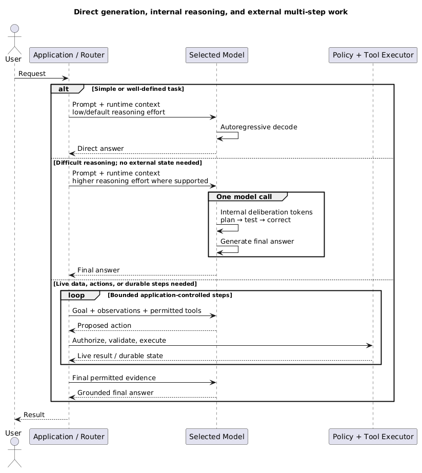

AI Models and Providers
Use this page to select a model and decide how to consume it. It merges model characteristics and provider choices because they are evaluated together, while keeping the distinction explicit.
1. Model, provider, and cloud are different
- Model: the trained artifact and inference behaviour.
- Model provider: the organisation that trains, publishes, or serves a model family.
- Cloud/model platform: the commercial and technical access path around the model.
- Example:
- Claude is an Anthropic model family;
- it can be consumed directly from Anthropic or through Amazon Bedrock;
- the access path changes API shape, regions, quotas, billing, networking, and governance;
- it does not make Bedrock the model.
workload → model capability → provider/model family → access path → production controls
1.1 What belongs to the model
- A usable model/checkpoint normally expects a compatible package:
- tokenizer rules and vocabulary;
- token-ID mapping;
- internal embedding and transformer weights;
- output vocabulary/projection;
- detokenizer/configuration.
- These components are trained or defined together and are not generally interchangeable across model families.
- Even versions within one family may change tokenizer, architecture, context limits, special tokens, or chat format; compatibility must be documented and tested.
- General algorithms such as softmax, temperature sampling, and top-p are not owned by one model provider, although exposed controls and serving behaviour vary.
- The request lifecycle and coupling are explained in AI Fundamentals.
1.2 Who owns and hosts what
- Model creator/publisher:
- trains or releases the model family and defines its model artifacts/licence.
- Direct API provider:
- serves its own or licensed models behind an API;
- owns runtime concerns such as batching, capacity, upgrades, moderation, and exposed parameters.
- Cloud model platform:
- provides access to models from one or more creators with cloud identity, networking, billing, governance, and regional availability;
- does not become the creator of every model it hosts.
- Self-hosting operator:
- runs compatible open-weight artifacts and owns serving engines, hardware, quantization, scaling, patching, and safety controls.
- The same model family can be available through several access paths, but API features, versions, latency, quotas, and governance can differ.
2. Select by workload, not leaderboard
- Start with representative tasks and explicit acceptance thresholds.
- Choose the smallest, fastest, least expensive model that passes quality and safety requirements.
- Evaluate the full system because prompt, retrieval, tools, and model behaviour interact.
- Public benchmarks are useful for shortlisting, but may not represent:
- domain terminology;
- long documents;
- exact identifiers;
- tool schemas;
- refusal policy;
- production latency and throttling.
Core dimensions:
- Task quality: correctness, relevance, completeness, groundedness, and consistency.
- Reasoning: performance on multi-step constraints, planning, calculations, and ambiguous tasks.
- Instruction following: ability to respect policy, format, length, and evidence requirements.
- Context performance: usable recall across long input, not only the advertised maximum.
- Modalities: text, image, audio, video, and document input/output requirements.
- Tool use: correct tool selection, argument accuracy, recovery from tool errors, and parallel calls.
- Structured output: schema-valid output plus semantic field correctness.
- Latency: time to first token, tokens per second, and p95/p99 end-to-end time.
- Throughput: concurrent requests, quota, batching, and provisioned capacity.
- Cost: input/output tokens, retries, reasoning tokens, retrieval, tools, and idle capacity.
- Operations: availability, regional support, versioning, deprecation, observability, and support.
3. Model categories
- Categories overlap; they describe workload role and inference behaviour more than universal neural-network architectures.
- A general-purpose model is broad, not automatically fast:
- smaller, distilled, quantized, or serving-optimized variants are usually the fast tiers;
- a large general model can still be slower and more expensive than a smaller reasoning model.
- A reasoning model is usually still an autoregressive transformer, but its training and serving encourage more useful intermediate deliberation:
- reinforcement learning or related post-training can reward decomposition, checking, and correction;
- more reasoning effort/test-time compute can generate more internal tokens before the final answer;
- later tokens can attend to earlier reasoning and correct course, but the model does not literally rewrite earlier token IDs in place;
- provider internals vary and may include hidden reasoning, verifiers, search, or other techniques.

- Internal multi-step reasoning occurs inside one model call and consumes inference time/tokens; providers may expose only a summary or no reasoning trace.
- External multi-step execution is an application, workflow, or agent loop across model calls and tools; the application owns authorization, state, limits, and retries.
- Shared conceptual levers include:
- model/tier selection;
- prompt and runtime context;
- input/output token budgets;
- RAG and tools around the model;
- latency, cost, and quality thresholds.
-
Model-specific levers include reasoning effort/thinking level, temperature/top-p availability, tool/structured-output support, and context/output limits. The names and semantics are not portable guarantees.
- General-purpose model:
- broad generation, summarisation, extraction, coding, and conversation;
- good default when task distribution is varied;
- may be expensive and less predictable than a specialist.
- Reasoning model:
- is post-trained and served to spend more useful inference compute on difficult multi-step tasks;
- useful for difficult planning, coding, and constraint solving;
- watch latency, token use, and unnecessary use on simple tasks.
- Small language model:
- useful for classification, routing, extraction, moderation, and high-volume transformations;
- lower cost and latency;
- weaker on ambiguity and long-tail reasoning.
- Embedding model:
- maps queries and documents into vectors for retrieval or clustering;
- does not generate answers;
- changing model/version/dimension usually requires re-embedding the corpus.
- Reranking model:
- scores a query jointly with retrieved candidates;
- improves top-result precision after cheaper broad retrieval;
- adds per-candidate latency and cost.
- Specialised model:
- targets speech, vision, classification, extraction, moderation, or a domain task;
- can be cheaper and easier to evaluate than a general LLM.
Primary examples: OpenAI reasoning training and test-time compute, the DeepSeek-R1 paper, and Gemini thinking controls.
3.1 Adapt the model only when the problem calls for it
Four approaches are often confused because each can improve an answer. They change different things:
Need a clearer one-request instruction? → prompt engineering
Need current/private/citeable facts? → RAG
Need consistent task behaviour, format, or tone? → fine-tuning
Need broad domain language in model weights? → continued pre-training
| Approach | What changes? | Choose it when | Do not choose it when |
|---|---|---|---|
| Prompt engineering | Current request only | A clear instruction, examples, or output schema can solve the task | Facts must stay current or behaviour is still inconsistent after evaluation |
| RAG | Current runtime context | Knowledge changes often, is private, needs citations, or must respect document ACLs | The real problem is stable style or repeated input→output behaviour |
| Supervised fine-tuning (SFT) | Selected model weights | Many labelled examples should make a narrow task, terminology, tone, or structure more consistent | You need a searchable, frequently changing knowledge base |
| Continued pre-training | Model weights, using a large domain corpus | The model needs broad domain-language adaptation before downstream tasks | A small set of instructions or current documents is sufficient |
Instruction tuning is a form of post-training that teaches a model to follow instructions and preferred response patterns. In practice, SFT often uses instruction/input → desired-output examples. It is not a document lookup mechanism.
PEFT / LoRA are parameter-efficient fine-tuning ideas: instead of updating every base-model weight, training learns a small set of added or low-rank parameters. They reduce customization compute/storage and can make serving several task adaptations practical. They still change model behaviour and need the same evaluation, versioning, and rollback discipline as any other customization.
Catastrophic forgetting is a customization risk: aggressive or narrow training can degrade capabilities the base model previously had. Keep holdout tests for both the target task and important general/safety behaviours.
For AWS-specific customization capabilities and lifecycle decisions, see AWS AI Services.
Training data, evaluation data, and training controls
| Item | Purpose | Exam recognition rule |
|---|---|---|
| Training set | Updates model parameters | The examples the model learns from |
| Validation set | Tunes choices and detects overfitting during development | Never use it to update weights |
| Test set | Final unbiased measurement | Keep it held out until final comparison |
| Epoch | One full pass through the training set | More epochs increase learning and overfitting/cost risk |
| Batch size | Examples processed before one parameter update | A training-efficiency/stability control, not an inference setting |
| Learning rate | Step size of each parameter update | Too high can destabilize training; too low learns slowly |
Use a representative, deduplicated, permissioned dataset. Check label quality, class/edge-case coverage, PII/licensing, and train/validation/test leakage before interpreting a good score.
Make a customized model smaller only after measuring quality
- Distillation trains a smaller student to approximate a stronger teacher. Choose it when the target is lower serving cost/latency while retaining enough task quality.
- Quantization stores or computes weights with lower precision. It usually reduces memory and can improve throughput, but can reduce quality or hardware compatibility.
- Neither fixes stale knowledge. Re-evaluate quality, safety, latency, and cost on the same workload after either change.
Decision rule: start with prompt engineering; add RAG for changing evidence; fine-tune for repeated behaviour; use continued pre-training only when a large, stable domain corpus genuinely must alter the model’s broad internal language knowledge.
4. Open weights versus managed models
- Managed hosted API:
- fastest implementation path;
- no GPU serving or model patching;
- constrained by provider quotas, regions, API changes, and data terms.
- Cloud model platform:
- central identity, billing, governance, regional integration, and model choice;
- introduces platform-specific capabilities and uneven model availability.
- Self-hosted open weights:
- control over version, deployment location, serving, quantization, and some customization;
- requires accelerator capacity, autoscaling, batching, monitoring, patching, and safety controls;
- may be justified by data boundaries, sustained volume, offline use, or specialized latency;
- is rarely cheaper at low or unpredictable utilization.
- Open-weight does not necessarily mean open-source or unrestricted:
- inspect licence terms;
- permitted use;
- redistribution;
- training-data transparency;
- derivative-model obligations.
5. Provider landscape
Treat this as an ecosystem map, not a permanent ranking.
| Organisation | Famous model families | Typical shape | Common access paths |
|---|---|---|---|
| OpenAI | GPT; current GPT tiers include Sol, Terra, and Luna | Hosted general-purpose reasoning, coding, multimodal, structured-output, and tool models | OpenAI API and OpenAI applications |
| Anthropic | Claude: Fable, Opus, Sonnet, and Haiku tiers | Hosted reasoning, coding, long-context, and agent/tool workloads | Claude API, Amazon Bedrock, Google Cloud, and other supported platforms |
| Google / Google DeepMind | Gemini: Pro, Flash, and Flash-Lite tiers; Gemma open models | Multimodal models with strong Google Cloud/data integration | Gemini Developer API and Vertex AI |
| DeepSeek | DeepSeek V4 Pro and V4 Flash | Reasoning/coding with low-cost APIs and open-weight options | DeepSeek API, compatible API formats, and self/third-party hosting |
| Meta | Llama | Open-weight ecosystem with many sizes and community serving stacks | Self-hosting and many cloud/model hosts |
| Mistral AI | Mistral and Mixtral families | Hosted and open-weight models, often emphasizing efficient deployment | Mistral API, self-hosting, and cloud/model hosts |
| Cohere | Command, Embed, and Rerank | Enterprise generation plus dedicated retrieval and ranking models | Cohere API and supported cloud platforms |
| Amazon | Nova generation models and Titan embedding/model families | AWS-native model families and managed delivery | Amazon Bedrock |
- GPT is a model family; ChatGPT is an application that uses models and additional product services.
- Claude is Anthropic’s model family; Claude.ai is an application, while Claude can also be invoked through other platforms.
- Gemini is used as both a model-family and product brand, so record the exact API model ID and access path.
- A cloud platform may host another organisation’s model without becoming that model’s creator.
- For every evaluation, record the exact model ID, API/access path, Region, date, and configuration.
6. API pricing and cost comparison
Pricing snapshot: 20 August 2026, USD per 1 million tokens (
MTok). Prices, previews, discounts, and model availability change; verify the linked official pages before making a production decision.
Representative hosted text-model rates:
| Provider | Model | Position | Standard/cache-miss input / MTok | Output / MTok |
|---|---|---|---|---|
| OpenAI | GPT-5.6 Sol | Frontier | $5.00 | $30.00 |
| OpenAI | GPT-5.6 Terra | Balanced | $2.00 | $12.00 |
| OpenAI | GPT-5.6 Luna | High-volume | $0.20 | $1.20 |
| Anthropic | Claude Fable 5 | Highest capability | $10.00 | $50.00 |
| Anthropic | Claude Opus 4.8 | Advanced | $5.00 | $25.00 |
| Anthropic | Claude Sonnet 5 | Balanced | $2.00* | $10.00* |
| Anthropic | Claude Haiku 4.5 | Fast | $1.00 | $5.00 |
| Gemini 3.1 Pro Preview | Advanced multimodal | $2.00 | $12.00 | |
| Gemini 3.5 Flash | Fast/balanced | $1.50 | $9.00 | |
| Gemini 3.1 Flash-Lite | High-volume | $0.25 | $1.50 | |
| DeepSeek | DeepSeek V4 Pro | Advanced/open-weight | $0.435 | $0.87 |
| DeepSeek | DeepSeek V4 Flash | High-volume/open-weight | $0.14 | $0.28 |
* Claude Sonnet 5 introductory rate through 31 August 2026; the documented standard rate is $3 input / $15 output per MTok.
Basic token-cost calculation:
request cost ≈
input_tokens / 1,000,000 × input_rate
+ output_tokens / 1,000,000 × output_rate
Example using GPT-5.6 Terra:
100,000 input tokens × $2 / MTok = $0.20
10,000 output tokens × $12 / MTok = $0.12
─────
Estimated model-token cost $0.32
- Real cost may also include:
- cached-input reads and cache writes;
- reasoning/thinking tokens;
- long-context price tiers;
- batch, flex, priority, or provisioned capacity;
- web search, grounding, file search, code execution, or other tools;
- reranking, embeddings, storage, data transfer, and retries;
- regional/data-residency premiums or cloud-platform pricing.
- Output is often more expensive because generation is sequential; minimizing unnecessary output can matter more than small prompt reductions.
- Compare cost per successful task, not only price per token. A cheap model that retries or fails often can cost more overall.
- Consumer plans such as ChatGPT Plus or Claude Pro purchase application access and usage allowances; they are not interchangeable with API credits or per-token rates.
Official references:
- OpenAI models and prices
- Anthropic Claude pricing
- Google Gemini API pricing
- DeepSeek models and pricing
7. Routing, cascades, and fallback
request → policy + difficulty classifier
├─ simple classification/extraction → small model
├─ retrieve documents → embedding model
├─ reorder candidates → reranker
├─ normal generation → general model
└─ difficult reasoning → reasoning model
failure ↓
tested semantic fallback
- Route using task type, risk, context length, latency budget, and measured confidence.
- Use cascades when a cheap first pass can reliably identify uncertain cases.
- Set an escalation budget; repeated model retries can cost more than using the stronger model once.
- A fallback must preserve a tested contract:
- supported modalities;
- tool names and schemas;
- structured-output behaviour;
- safety/refusal policy;
- context and output limits.
- A configured second model is not a fallback until it has passed the same regression suite.
8. Portability and lock-in
- Separate three kinds of portability:
- API portability: another adapter can send messages and receive output.
- Behavioural portability: the replacement preserves quality, tools, schemas, safety, and latency for the workload.
- Artifact compatibility: tokenizer, weights, and runtime formats can actually be loaded together; this mainly matters when self-hosting.
- Put a thin internal boundary around:
- messages and content parts;
- timeouts, retries, and cancellation;
- tracing and token/cost accounting;
- tool and structured-output schemas;
- model selection and fallback;
- safety policy.
- Keep provider-native features behind explicit adapters.
- Store prompts, tool schemas, and evaluation datasets outside provider consoles where practical.
- Expect portability work because models and serving access paths differ in:
- tokenization and context behaviour;
- streaming events;
- tool-call semantics;
- multimodal formats;
- reasoning controls;
- safety refusals;
- rate limits and errors.
- When changing generation models:
- retain raw text/messages and tokenize them with the target model; never migrate cached token IDs blindly;
- recalculate context and output limits;
- retest prompts, tool schemas, structured output, safety, latency, and cost;
- invalidate model-specific prompt/token caches;
- re-embed a RAG corpus only if its dedicated embedding model or preprocessing changes—not merely because the generation model changed.
- Do not reduce every provider to the lowest common denominator if a native feature creates measurable value; isolate and test the dependency instead.
9. Enterprise decision checklist
- Quality:
- Does it pass the workload regression set and worst-case slices?
- Data:
- Are prompts retained, logged, or used for training?
- Where is data processed and stored?
- Security:
- Are private connectivity, encryption keys, audit logs, and least-privilege access supported?
- Reliability:
- What are quotas, rate limits, SLAs, regional availability, and deprecation policies?
- Operations:
- Can requests, tokens, model versions, errors, and safety decisions be traced?
- Commercial:
- What is cost per successful task under realistic prompt/output sizes and retry rates?
- Exit:
- Can prompts, evaluation data, traces, and routing be moved?
- Which native features would need replacement?
See AI evaluation and infrastructure for workload testing and production controls. AWS-specific access decisions are in AWS AI services.